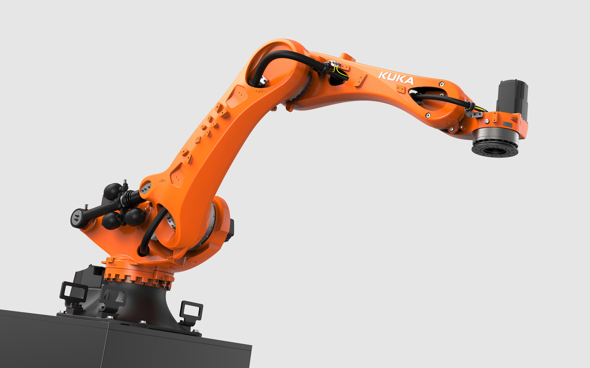
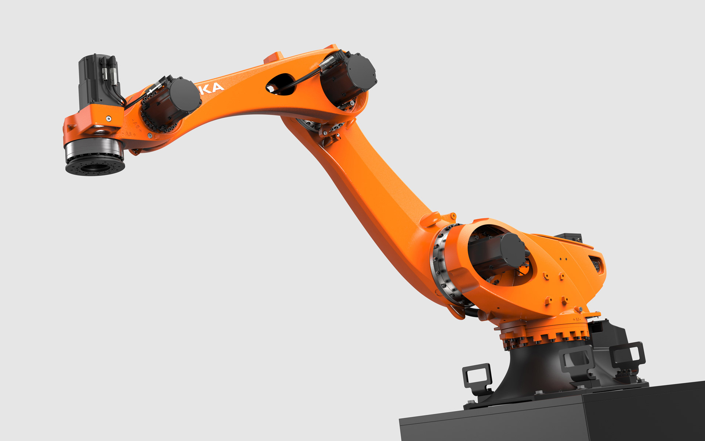
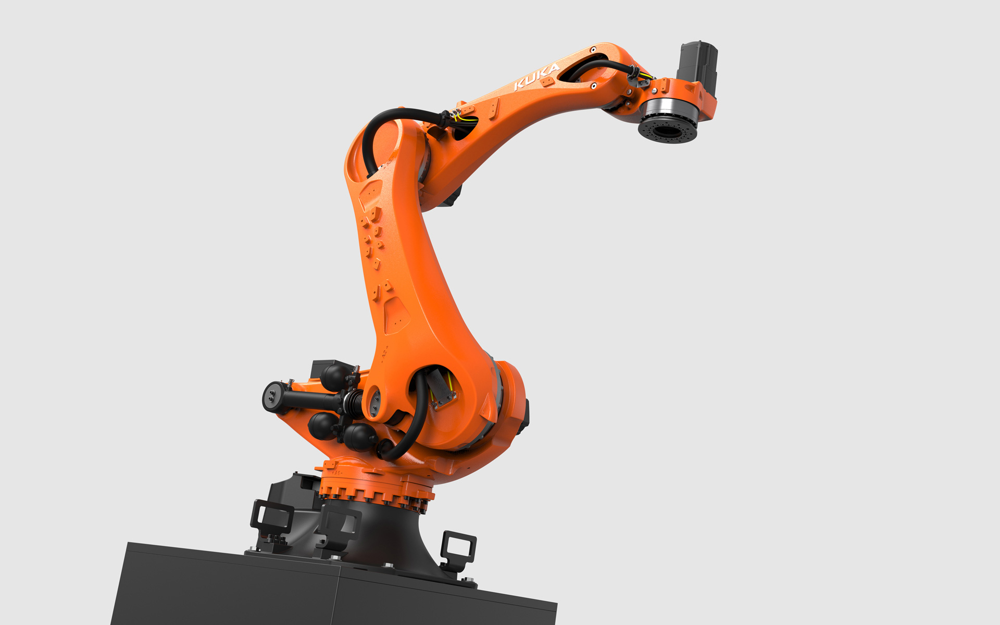
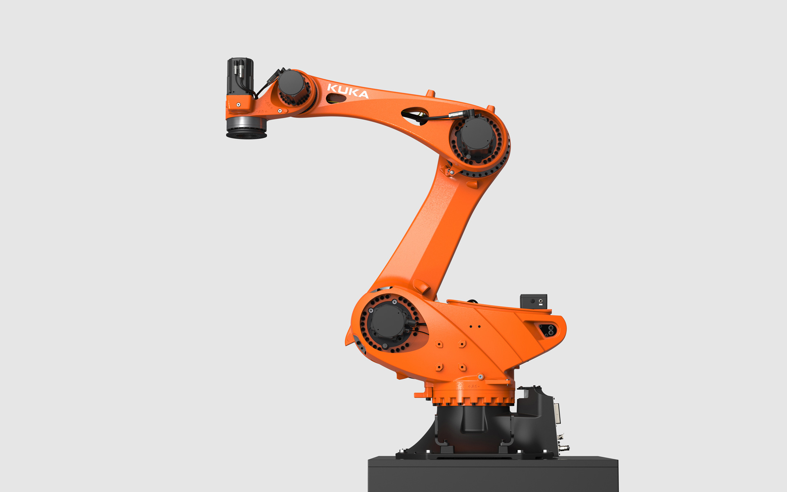

KUKA KR 470-2 PA
Heavy Duty Palletizing Robot
KUKA KR 470-2 PA
Schwerlast-Palettierroboter
The palletizing robot KR 470 R3200-2 PA stands for unbeatable and unbridled power in a compact format.
The palletizing robot was developed for precise handling in the shortest cycle times and can move workpieces
with payloads of up to 470 kg (1036 lbs) with a range of up to 3200 mm (126 inches). It offers maximum
performance in the smallest space and is equipped for the latest applications, from battery handling to
mega- and giga-casting. The extremely torsion-resistant design combined with powerful drives enables precise
and quick handling of heavy, large-format components with high moments of inertia.
Its appearance unmistakably shows the concentrated energy, speed and performance. It looks expressive,
incredibly powerful, extremely agile and, despite its enormous physical characteristics, radiates the
light-footedness of an athlete. Organically designed, powerful components give the machine a lively
appearance and show the muscles with which the robot achieves top performance. The second-life-capable
palletizer offers a long service life and, thanks to its low energy consumption, a climate-friendly overall
package.
Der Palettierroboter KUKA KR 470 R3200-2 PA steht für unschlagbare Power und unbändige Kraft im kompakten Format.
Der Palettierer wurde für präzise Handhabungen in kürzesten Taktzeiten
entwickelt und kann Werkstücke mit Nutzlasten von bis zu 470 kg mit einer Reichweite bis zu 3200 mm bewegen.
Er bietet maximale Leistung auf kleinstem Raum und ist für neueste Anwendungen, vom Batteriehandling bis hin
zum Mega- und Giga-Casting, gerüstet. Das extrem verwindungssteife Design in Verbindung mit leistungsstarken
Antrieben ermöglicht exaktes und schnelles Handling schwerer, großformatiger Komponenten mit hohen
Trägheitsmomenten.
Sein Erscheinungsbild zeigt unmissverständlich die geballte Energie, Schnelligkeit und Leistungsfähigkeit.
Er wirkt unglaublich stark, extrem beweglich und strahlt trotz der enormen physischen Eigenschaften eine
Leichtfüßigkeit eines Athleten aus. Organisch gestaltete, kraftvolle Bauelemente geben der
Maschine ein lebendiges Erscheinungsbild und zeigen die Muskeln, mit denen der Roboter zur Höchstleistung
aufsteigt. Fließende Formübergänge halten dem enormen Kraftfluss und den extremen physikalischen
Dynamikeigenschaften stand. Der Second Life-fähige Palettierer bietet eine lange Lebensdauer und durch
seinen niedrigen Energieverbrauch ein klimafreundliches Gesamtpaket.




Images © Selic Industriedesign